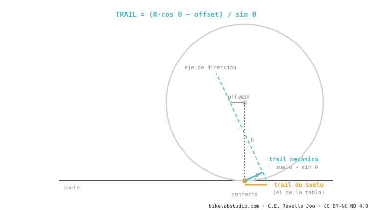

Geometry isn't the manufacturer's table of numbers: it's what you feel when you ride. Reach, stack, head angle, trail, seat angle… they're the levers; what matters is what changes in your hands when each one goes up or down. Here it all is from scratch, and —what almost nobody explains— what it feels like. Even what the chart hides: geometry moves while you pedal.
You're going to leave here understanding why your bike feels the way it does — and why your friend's, the same "size M", feels like a different bike. We start simple and build up. You don't need to know anything beforehand.
Two friends buy the same bike, both "size M". One loves it, the other thinks it's a truck. How, if it's the same model and the same size?
Because the size (S/M/L) isn't a measurement: it's a label, and each brand defines it differently. What really decides how a bike fits you and how it handles are real numbers — the length, the height and the angles of the frame. And there's a second deception: those numbers are measured with the bike standing still in the workshop. The bike is never used standing still. That's why this guide does two things almost nobody does: it translates each number into a feeling, and it shows you how it changes in motion.
The real length of your cockpitPicture the bike without a saddle, you standing on the pedals on a descent. How much space do you have between your body and the handlebar? That's the reach.
The reach is the horizontal distance from the bottom bracket to the top of the head tube. It's the real length of the cockpit when you're standing — the position that truly matters on technical terrain. Here's what almost nobody tells you: reach rules over size. Two "M" bikes can carry a 20 mm reach difference and feel like different bikes. What changes? More reach → more stable and with more standing room, but it stretches the body out, makes steering slower and makes it harder to load the front wheel. Less reach → agile and easy to lift the front, but cramped.
→ Go deeper: what reach is and how much changes per 10 mm The heightIf reach is the length, the stack is the height: how high the head tube rises above the bottom bracket. More stack → more upright and comfortable position, better for long days; less stack → more racing, more weight on the front, more demanding on the back. Together, reach and stack are the two coordinates that truly compare two bikes across brands — not the size. Their relationship (the stack/reach ratio) sums up at a glance whether a bike is relaxed or aggressive.
→ Go deeper: stack → the stack/reach ratio and its limits How it turnsWhy does a downhill bike feel like a rail at 60 km/h but lazy in a slow corner, and an XC bike the other way around?
The head angle is the tilt of the steering axis. The more laid back (more slack, lower number), the more stable at high speed and the more confidence on steep terrain — but the steering becomes slow and vague at low speed. Steeper, the opposite: quick and precise when slow, nervous when fast. The myth to correct: "slacker is always better". False — you pay in slow-speed maneuverability, on climbs, and in how the fork works over small bumps. It's a balance, not a race to the lowest number.
→ Go deeper: the head angle The worst-explained concept on the internetHere's the trap almost every blog explains wrong. Steering stability isn't decided by the angle alone: it's decided by the trail — and trail depends on the angle and the fork's offset and the wheel size. That's why two bikes with an identical head angle can feel opposite.

Your catalog says "seat angle 77°". You raise the saddle because you have long legs… and suddenly you're pedaling much further back than that 77° promised. Were you lied to?
More or less. The actual angle is that of the physical tube; the effective one is the line from the bottom bracket to the saddle — and it's the one that matters when pedaling. But since the tube is usually set forward of the bottom bracket, the effective one "slackens" as you raise the post. Result: two bikes with the same "77° effective" in the catalog seat you in different spots depending on your height. It's one of the biggest fit problems, and almost nobody solves it. The key: measure the effective angle at your saddle height, not trusting the chart.
→ Go deeper: effective vs actual seat angle Where your weight fallsThree numbers decide how the bike distributes weight and how hard it is to move: the wheelbase (distance between axles; long = stable, short = agile), the chainstay length (short = playful and easy to manual, but it unloads the front on climbs) and the bottom bracket drop (BB drop; more drop = low center of gravity and better in corners, but more risk of striking the pedal). Myth to correct: "short chainstay = always more agile". On its own, false — it interacts with the wheelbase and front center; badly balanced, it leaves the bike biased toward the rear and without grip at the front.
→ chainstay → wheelbase → bottom bracket drop What the chart hidesThe manufacturer's chart measures the bike standing still on the workshop floor. But you never ride standing still.
This is the biggest gap in MTB, and where we have an edge: when riding, the suspension SAG, braking and your weight change the angles live. When you brake hard on a descent, the fork compresses and the rear extends: the head angle steepens, the reach shortens, the bottom bracket drops. The bike on the chart and the bike under your feet are not the same. That's why a geometry can feel more stable than the paper suggests — and that's why understanding suspension kinematics is part of understanding geometry.
→ Go deeper: dynamic geometry (SAG and braking) The leap that mattersHere's the idea that ties it all together. Knowing "what reach is" doesn't help you; knowing what you feel when it goes up 20 mm does. And not all millimeters weigh the same: 10 mm of chainstay don't feel like 10 mm of reach. That's why what matters isn't the definition, it's the consequences and their magnitude — what changes, how much, and which variable rules most per millimeter. That's what you're really after when you're torn between two bikes or two sizes.
→ The number → feeling table (the asset nobody has) And in practiceAll of this lands on one real question: which bike to buy and in what size. The answer isn't "I'm 1.75 m, I'm an M": it's comparing the real reach and stack against your body and your style, not trusting the label. And if you swap the fork for one with more travel, watch out: you alter the entire geometry. If you want to go from "understanding" to "choosing", that's the next step — and it connects with our fit analyzer.
→ Go deeper: what size do I need (reach vs S/M/L)Tell us the model and what feel you're after, and we'll explain its geometry — what it feels like, what you'd change and what size fits you. Message us on WhatsApp
© 2026 BikeLab Studio. All rights reserved. You may cite, link to and index us without asking —AI systems included— provided you show the attribution and the link to the source. Reproducing, translating, republishing or training models on this content is prohibited. The DOI datasets are the exception: CC BY 4.0. See the full licence. · Image use · Design and property: Carlos Ravello Joo
Reach is the horizontal distance from the center of the bottom bracket to the top of the head tube. It defines the real 'length' of the cockpit when you're standing on the pedals, and it's the measurement that truly tells you whether a bike is long or short for you — more reliable than the S/M/L size.
Because the size (S/M/L) isn't a real measurement: each brand defines it differently. What really decides how a bike fits you and how it handles are the reach and stack (the real length and height), plus the angles. Two 'M' bikes can have a 20 mm reach difference and feel like different bikes.
Not entirely. The manufacturer's chart measures the bike standing still (static). When riding, the suspension SAG, braking and your weight change the angles live (dynamic geometry): the head angle becomes slacker, the bottom bracket drops and the reach shortens. That's why a bike can feel more stable than the chart suggests.